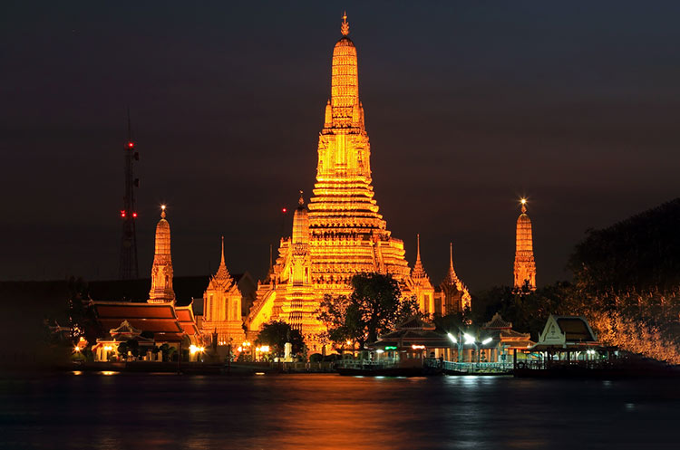
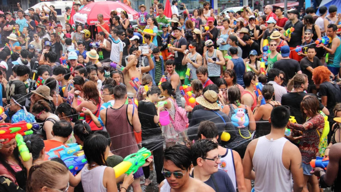

Made by: Birol

Contents:
Where Is Thailand?
Landmarks
Food
School
Holidays
Land
Religion
Climate
Fun Facts
-----------------------------------------------------------------------------------------------------------------------------------------
Where Is Thailand?
Thailand, in Southeast Asia, boasts stunning beaches along the Gulf of Thailand and the Andaman Sea. Bordered by Myanmar, Laos, Cambodia, and Malaysia, it offers a rich cultural experience with vibrant cities, delicious street food, and historical treasures like the Grand Palace in Bangkok.
Map of Thailand:

Landmarks
Embraced by the vibrant energy of Bangkok, Thailand's dynamic capital, a trio of iconic landmarks stands proudly, showcasing the nation's rich history and cultural splendor. Wat Arun, often referred to as the Temple of Dawn, graces the Chao Phraya River with its picturesque presence, while the Grand Palace, a majestic complex, narrates centuries of royal legacy. Meanwhile, Wat Pho, housing the serene reclining Buddha, stands as a testament to spiritual magnificence, collectively inviting exploration and reverence in this bustling metropolis.
Picture of Wat Arun:

Food
Seafood takes a prominent role in Thai cuisine, celebrated for its bold and spicy flavors. The Thai dining experience often revolves around a rich variety of seafood. Among the favorites, Pad Thai, a sweet and savory stir-fried noodle classic, Tom Yum Goong, a zesty shrimp soup with lemongrass and chili, and Green Curry, a creamy coconut curry with a spicy kick, are cherished dishes.
Picture of Pad Thai

School
In Thailand, schools usually operate from 8:00 AM to 3:00 PM, providing students with a structured 12-year education. A common practice in these schools is the adoption of various uniforms, each unique in style and color, fostering a sense of identity among students. Beyond traditional subjects, Thai schools take a comprehensive approach to education, incorporating lessons on Thai culture, history, and Buddhism into their regular curriculum. This inclusive learning experience aims to deepen students' understanding of their cultural heritage and promotes a strong connection to the values that shape Thai society.
Holidays
Among the numerous holidays celebrated by Thai people, three stand out: Songkran Festival in April, known for its spirited water fights symbolizing cleansing; Loi Krathong in November, featuring floating decorated baskets to pay respects to water spirits; and King Bhumibol Memorial Day on December 5th, honoring the revered late King Bhumibol Adulyadej.
Picture of the Songkran Festival:

Land
Thailand's diverse geography is a symphony of landscapes. Vast central plains stretch into fertile fields, while the northern highlands boast majestic mountains. The northeastern plateau offers a sense of vast tranquility, and the southern peninsula reveals captivating light-blue waters along the coast. In the west, rugged mountain vistas unfold, and meandering river valleys enhance the overall scenic beauty. Thailand's natural wonders invite exploration, each region telling a unique story in the tapestry of its awe-inspiring landscapes.
Picture of the Thailand landscape:

Religion
At the heart of Thailand's cultural tapestry, Buddhism stands as a guiding force, intricately woven into daily life and cultural practices. Its influence extends from elaborate rituals to grand ceremonies, shaping a distinctive way of life that echoes a profound spiritual connection deeply rooted in tradition. Venturing into the southern regions, Islam emerges as a significant contributor, introducing its own set of practices and traditions that complement the rich cultural mosaic. This regional diversity not only adds layers to the broader cultural identity of Thailand but also fosters an atmosphere of unity in diversity. Expanding the canvas of religious expression, Christianity, comprising both Catholicism and Protestantism, establishes a visible presence across the nation. Christian communities, while constituting a minority, play a noteworthy role, contributing unique practices and celebrations that further enrich the spiritual narrative of Thailand. In this dynamic interplay of diverse faiths, Thailand embraces a harmonious coexistence where Buddhism, Islam, and Christianity converge, creating a vibrant and inclusive cultural and religious identity for the nation—a tapestry woven with threads of tradition, diversity, and shared values.
Climate
Thailand has a tropical climate with high temperatures and humidity year-round. The average annual temperature is 82°F (28°C) while the average high is 86°F (30°C) and average low is 73°F (23°C). Thailand's hottest temperature occurred on April 27, 2016 in Uttaradit province, reaching 112.1°F (44.5°C). The coldest temperature on record was 29.5°F (-1.4°C) in Sakhon Nakhon on December 28, 1999. Thailand has three seasons - hot from February to May, rainy from May to October due to the southwest monsoon, and cool from October to February with the northeast monsoon. The north sees a more pronounced cool season while the south along the coast experiences high rainfall. Thailand lies in a tropical cyclone zone and sees threats from severe storms during the monsoon season.
Fun Facts